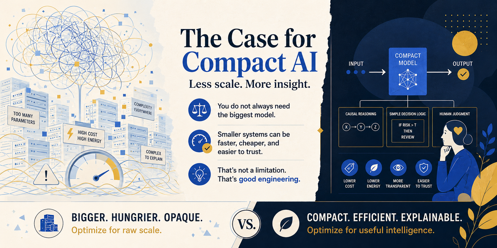
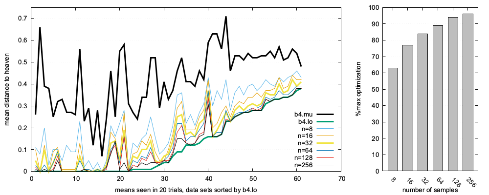

research |
teach |
blog |
news
papers: arxiv |
Scholar |
by topic
The Case for
Compact AI
timm@ieee.org
+1-304-376-2859
make appointment
join reading group
research |
teach |
blog |
news
papers: arxiv |
Scholar |
by topic
timm@ieee.org
+1-304-376-2859
make appointment
join reading group
Summary
The Case for Compact AI — Tim Menzies on active learning, funneling, and why smarter questioning beats planetary-scale compute.

Tim Menzies · Posted Jul 10, 2025
Published as “The Case for Compact AI,” Communications of the ACM 68(9), Sep 2025, pp. 6–7. doi:10.1145/3746057[0]
“ State-of-the-art results come from smarter questioning, not planetary-scale computation. ”
Reading CACM's March 2025 issue, it struck me how many articles assume Large Language Models are the inevitable and best future path for AI. This post invites you to question that assumption.
To be clear: I use LLMs, a lot — for solo and tactical tasks such as condensing my arguments into short prose. But for strategic tasks that might be critiqued externally, I need other tools: faster, simpler, and whose reasoning can be explained and audited. I do not want to replace LLMs. I want to ensure we are also supporting and exploring alternatives.
In software engineering, very few researchers explore alternatives to LLMs. A recent systematic review found only 5% of hundreds of SE LLM papers considered alternatives[1]. A major methodological mistake that ignores simpler and faster methods. For instance, UCL researchers found SVM+TF-IDF methods vastly outperformed standard "Big AI" for effort estimation — 100 times faster, with greater accuracy[2].
One reason for asking "if not LLM, then what?" is that software often exhibits funneling: despite internal complexity, behavior converges to few outcomes, enabling simpler reasoning[3],[4]. Funneling explains how my "BareLogic"[5] active learner can build models using very little data for (e.g.) 63 SE multi-objective optimization tasks from the MOOT repository[6]. These tasks cover software process decisions, configuration tuning, and learner tuning for analytics — better advice for project managers, better control of options, sharper local analytics.
MOOT includes 100,000s of examples with up to a thousand settings. Each example labelled with up to five effects. Obtaining labels is slow, expensive, error-prone. Hence the task of active learners like BareLogic: find the best example(s), after requesting the least number of labels[7].
BareLogic labels N=4 random examples, then:
Written for teaching as a simple demonstrator. But consistent with funneling, this quick-and-dirty tool achieves near optimal results using a handful of labels.

Across 63 tasks: eight labels yielded 62% of optimal; 16 reached nearly 80%; 32 approached 90%; 64 barely improved on 32.
State-of-the-art with smarter questioning, not planetary-scale compute. Active learning addresses common LLM concerns:
I am not the only one proposing weight loss for AI. LLM distillation — shrinking huge models for specific purposes[8] — already shows giant models are not always necessary. Active learning pushes the idea further: leaner, smarter modeling achieves great results.